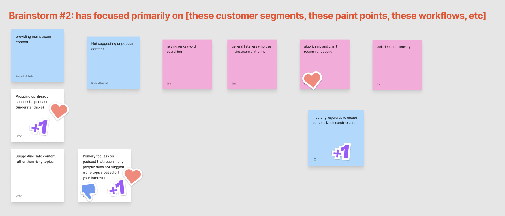
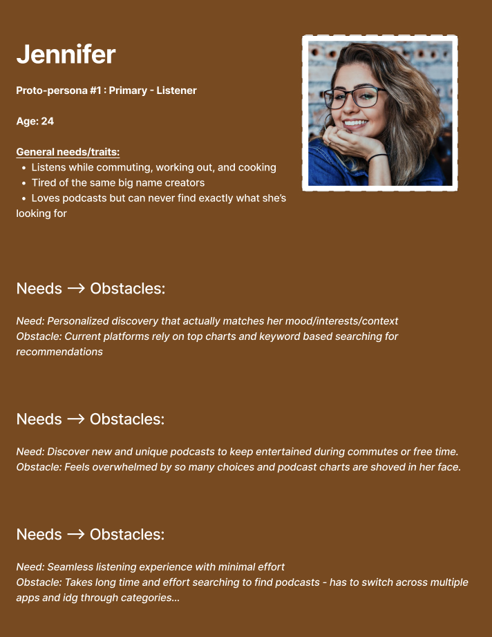
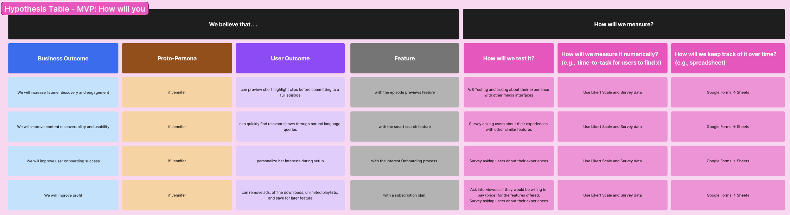
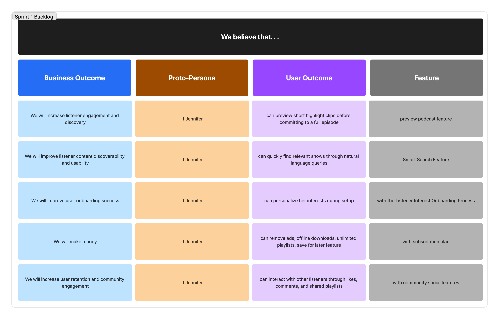
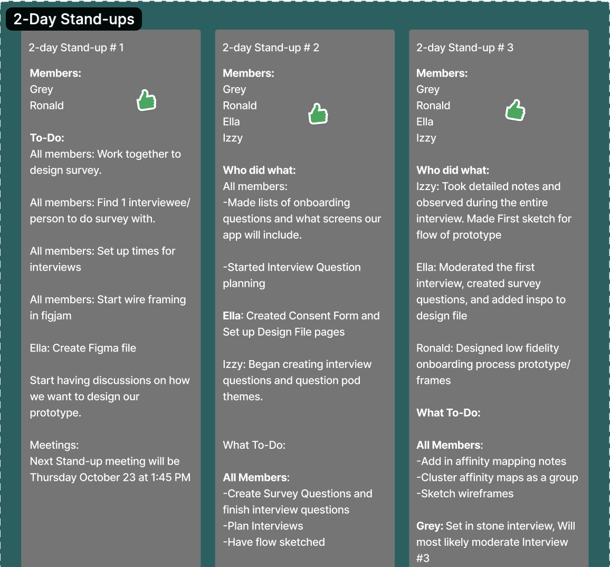
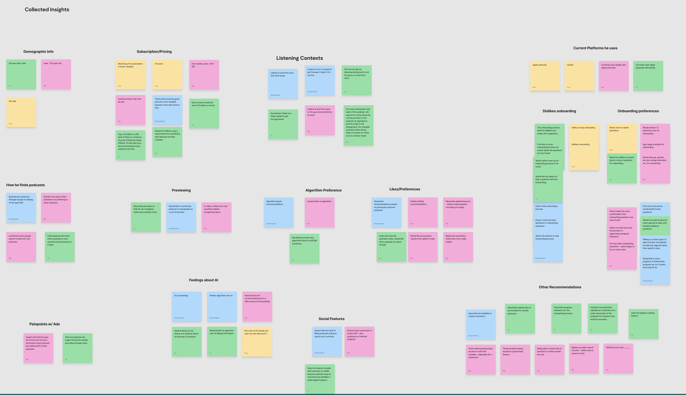
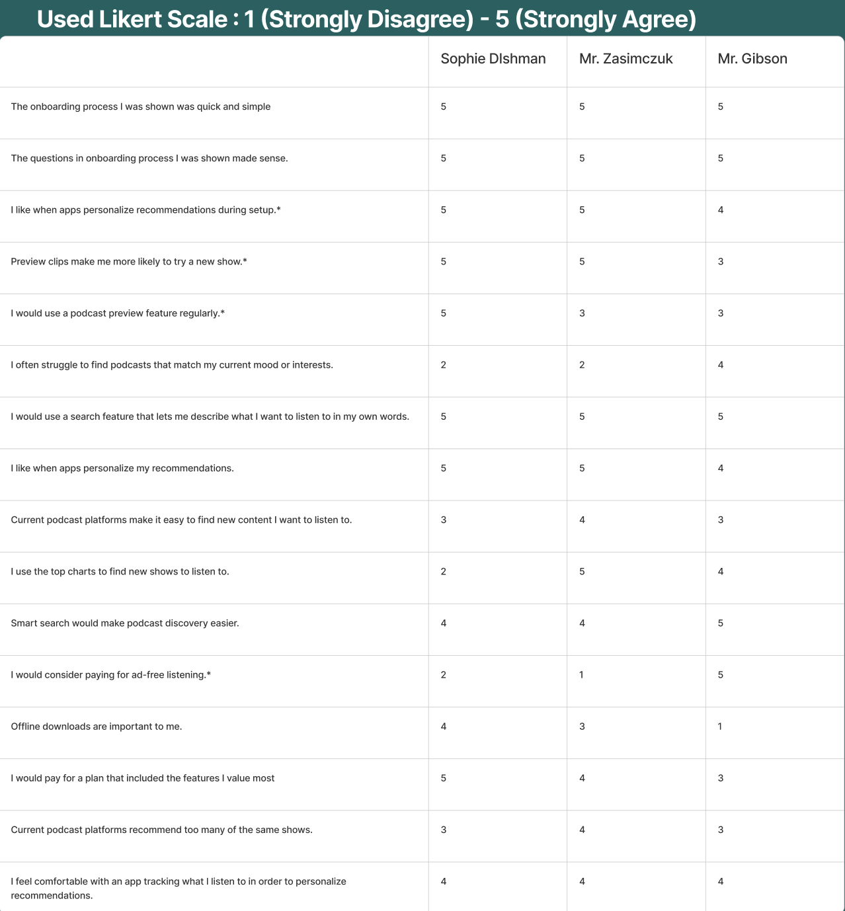
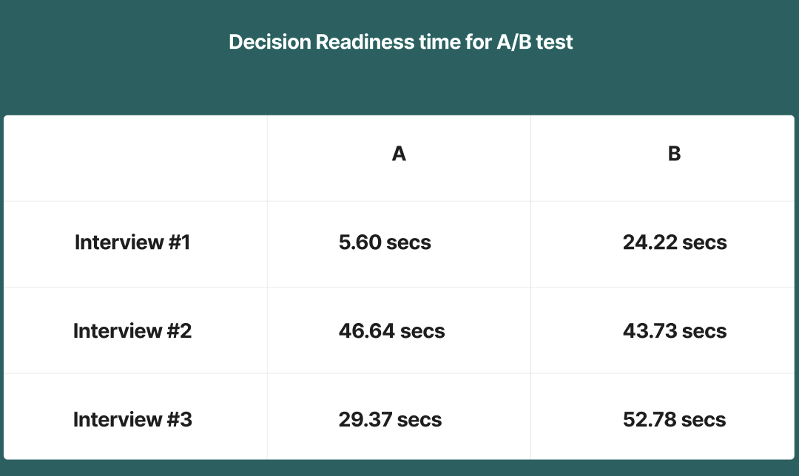
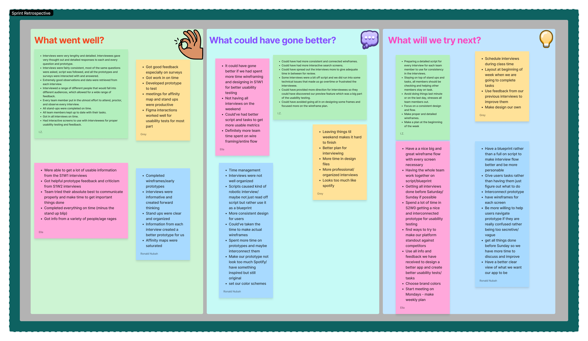

Podly
View PrototypeFind Your Podcast With Podly
Podly is an AI-powered podcast discovery platform designed to solve podcast discoverability. By understanding a user's mood, interests, listening habits, lifestyle, and context, Podly delivers highly personalized recommendations while helping listeners uncover niche content that traditional podcast platforms often overlook.
I became part of a team to work on this prototype after my classmate, Ella Ramsey, pitched the project idea for Podly. I just had to help bring Ella's vision to life, and I believe we did that successfully. She pitched this idea after realizing that whenever she searched for niche or specific podcast topics on Spotify, the results were often broad and generic, or simply matched keywords in the title instead of recommending podcasts that were actually about the topic she was looking for.
This project was done while attending Kennesaw State University with my team: Ella Ramsey, Grey Gibson, and Isabella Zasimczuk

Sprint 1 Week 0 - Discovery
Every successful product starts with understanding the problem. Following the Lean UX methodology, our team began by defining the business challenge, identifying our target users, and establishing measurable outcomes before designing any solutions.
Instead of making assumptions, we documented hypotheses about user behavior, prioritized the highest-risk ideas, and created a roadmap for validating them throughout the project.
Activities
- Defined the business problem and aligned on the product challenge to solve.
- Established business outcomes and identified measurable success metrics.
- Identified target users by creating proto-personas based on user goals and needs.
- Defined user outcomes and benefits to understand the value users should gain.
- Brainstormed potential solutions that addressed both business goals and user needs.
- Combined assumptions into clear, testable Lean UX hypotheses.
- Prioritized the riskiest assumptions to determine what needed to be validated first.
- Designed MVP experiments to test hypotheses and measure their effectiveness.
- Created a Product Backlog to capture all potential features and ideas, regardless of whether they would be built or measured in the first sprint.
- Developed a Sprint 1 Backlog by prioritizing the features and tasks the team planned to complete during the first sprint.




Sprint 1 Week 1 - User Research
To validate our assumptions, we conducted user interviews and analyzed participant feedback to better understand user behaviors, needs, and pain points. Through collaborative synthesis sessions, we identified recurring patterns and translated our findings into actionable insights that guided future design decisions. Regular stand-up meetings kept the team aligned and ensured research activities stayed on track throughout the sprint.
Activities
- Held 2-day stand-up meetings to align on progress, priorities, and next steps.
- Conducted user interviews to gather qualitative insights into user needs and behaviors.
- Synthesized interview findings using affinity mapping to identify recurring themes and pain points.
- MVP measurements through Likert scale.



Sprint 1 Week 2 - Testing & Iteration
Building on our initial research, we conducted another round of usability testing to evaluate additional features and validate our design decisions. Participants completed prototype tasks while we observed their interactions, measured task completion times, and collected post-test survey feedback. We then synthesized our findings through affinity mapping, analyzed MVP measurements, and concluded the sprint with a retrospective to identify what worked and what improvements needed to be made for the next sprint.
Activities
- Continued holding 2-day stand-up meetings, usability testing/interviews, and affinity mapping.
- Measured task completion times to assess usability and efficiency.
- Collected post-test user surveys to gather qualitative feedback on the prototype to evaluate MVP measurements.
- Conducted a sprint retrospective to reflect on team collaboration and identify improvements for the next sprint.

Sprint 1 Retrospective
At the end of Sprint 1 came time to reflect on how we conducted it. Sprint 1 had its success but also came with stressful points. Our team successfully gathered meaningful insights which helped validate our design decisions and identify areas for improvement. We shared our thoughts on what we did well and highlighted opportunities to strengthen our workflow by improving time management, creating more connected prototypes, refining interview scripts, and planning earlier for future testing sessions. These lessons provided a clear direction for Sprint 2 and reinforced the importance of using both user feedback and team reflection to drive continuous improvement.

Sprint 2 — Iteration & Refinement
Building on the insights gathered during Sprint 1, we refined our prototype through another Lean UX cycle. Rather than restarting the process, we revisited our assumptions, tested updated features with users, did the affinity maps, MVP measurements and incorporated feedback into the next iteration. This allowed us to validate design improvements while continuing to measure user performance and satisfaction.
Lean UX is iterative by nature
Each sprint followed the same Build → Measure → Learn cycle, allowing our team to continuously refine the product based on user feedback and measurable outcomes rather than assumptions.
Reflection
The final prototype successfully demonstrated Podly’s vision of helping users discover podcasts through AI-powered recommendations tailored to their interests, mood, lifestyle, and listening context, making it easier to uncover niche content that traditional recommendation systems often overlook. Podly isn't just another podcast app—it's a smarter way to discover content that truly matches who you are, what you're doing, and what you're looking for in the moment. Every round of user feedback helped us improve the experience, and by the end of the project we had built a prototype that solved a real problem in a way that felt intuitive and genuinely useful. Looking back, I believe our team achieved exactly what we set out to do.